Mod
All In Weapon: Unslotted
- Downloads
- 5,261
- Favourites
- 11
- Mod lists
- 3
Reimagining of the “All In Weapon” mod by Lua
Features
- Use any mod in any weapon or mod slot
- Use any ammo in any weapon or magazine
- Use any magazine with any weapon
- Remove Conflicting Items - mods no longer exclude each other from being attached to the same weapon
Screenshots
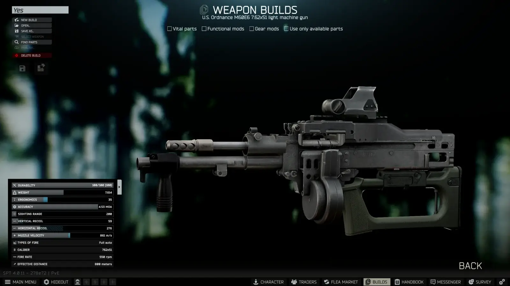
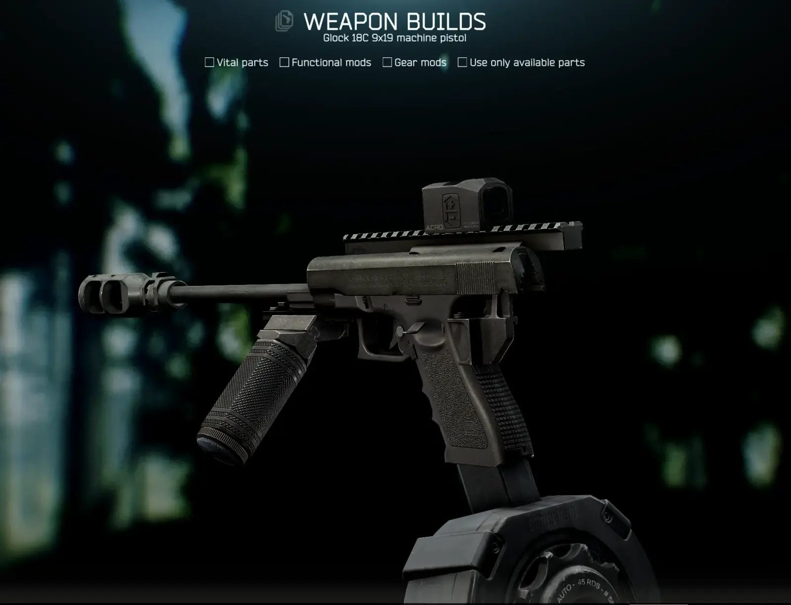
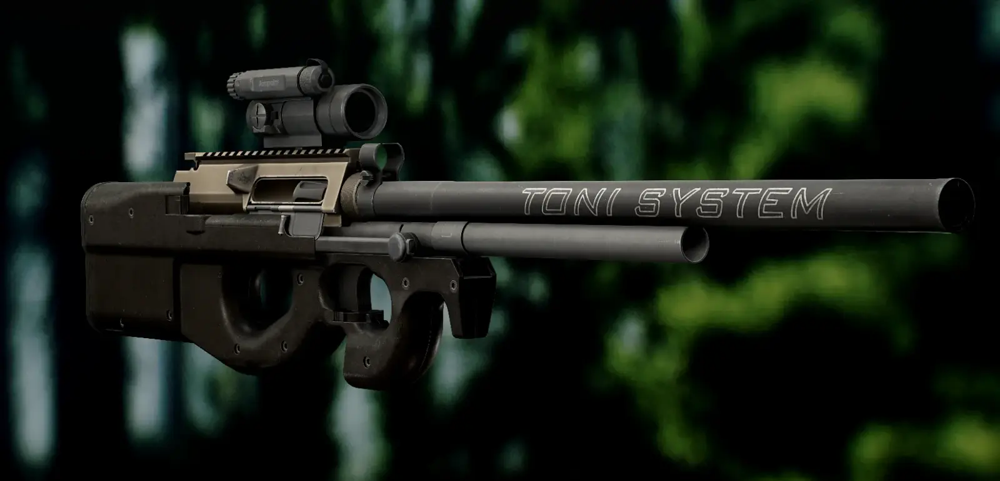
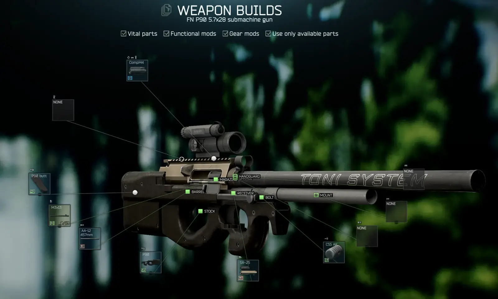
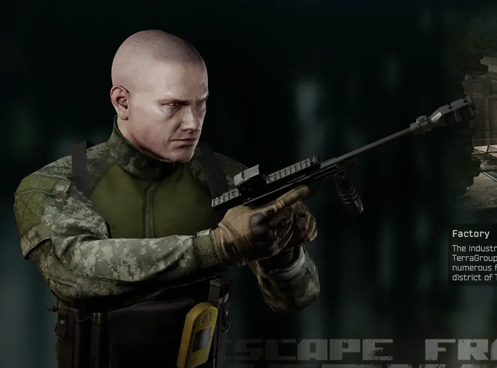
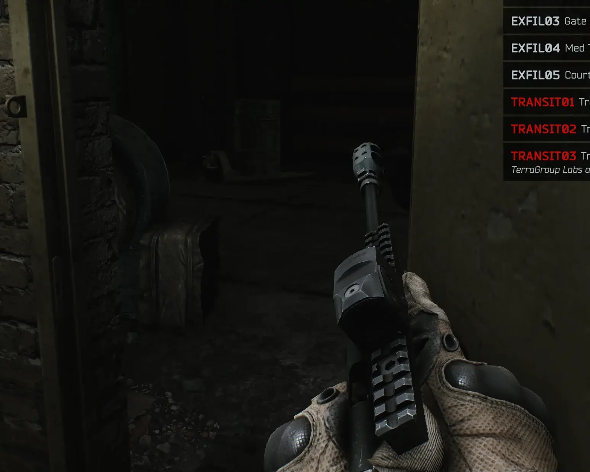
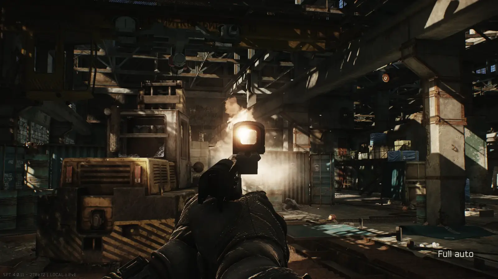
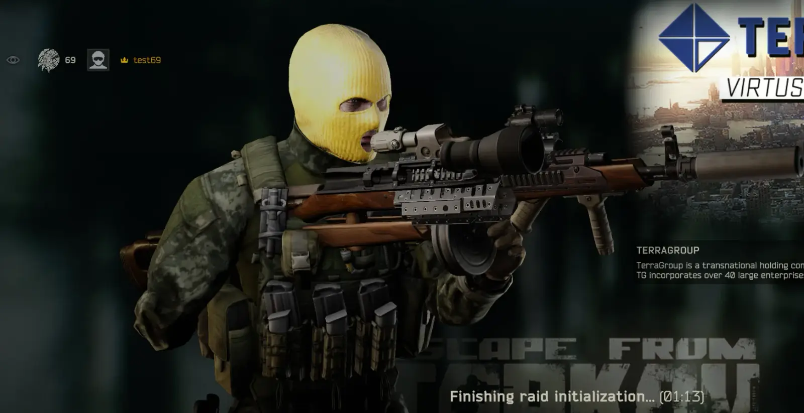
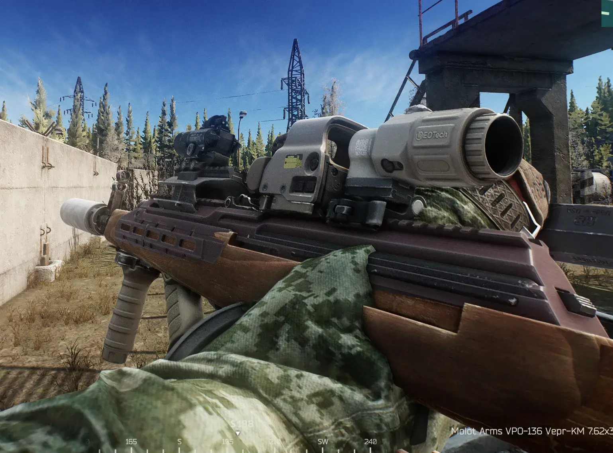
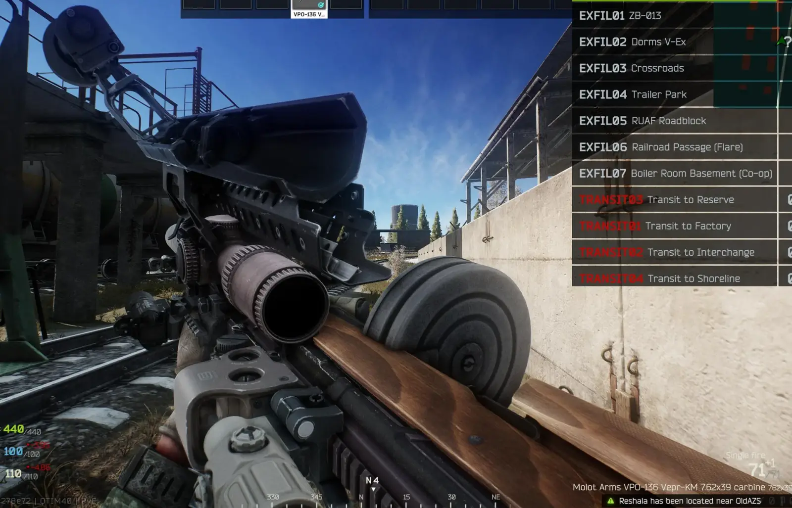
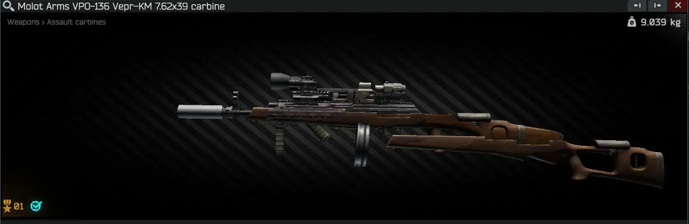
Config options
- FckWeapons - All weapon slots (excluding magazine) have their filters expanded to include all mods from the same category (based on categories of mods already included in that weapon slot filter)
- FckMods - All mod slots have their filters expanded to include all mods from the same category (same as above)
- FckChambers - Use any bullet with any weapon
- FckCalibers: - Use any magazine with any weapon
- FckMagazines - Use any bullet with any magazine
- FckALL - All weapon and mod slots have their filters expanded by all attachment categories
- RemoveConflictingItems - Removes “Conflicting Items” restrictions from mods
- Experimental - Changing “unslot” method to instead of adding all mods from the same category, add category ID to the slot. Can fix infinite client loading, but can introduce other issues
Notes
- If you have any issue with your installation of SPT, remove this mod first
- Removing this mod does not remove ANY cursed weapons already created
- Please do not use this mod with any serious THE CITY runs
- Bots WILL have cursed guns, unless APBS is used (but don’t tell Acid, I told you this! He will probably kill me for mentioning any of his mods here :V)
- My version of the mod is arguably better than the old one, because you can attach night vision goggles to your weapon – but they do not work, though… who could have guessed?
Credits
Original mod: “All In Weapon” by Lua
Requested and play-tested by: ITube
Version
1.1.1
SPT ~4.0.4
Fika: compatible
1,987 downloads13.7 KB
Fixed “FckCalibers” config option when “FckWeapons” option is disabled
VirusTotal: report 1
Version
1.1.0
SPT ~4.0.4
Fika: compatible
1,507 downloads13.7 KB
- Changed mod order, now mod is loaded at the end of everything
- Split “FckMagazines” config option to:
FckChambers: Use any bullet with any weapon
FckCalibers: Use any magazine with any weapon
FckMagazines: Use any bullet with any magazine - Added config option “FckALL”
Using new “experimental” unslot method you can now slot any attachment to any weapon and mod slot - Added new “experimental” unslot method that can be enabled in config
Enable this as your last resort when your game client is not loading at all
VirusTotal: report 1
Version
1.0.1
SPT ~4.0.4
Fika: compatible
1,555 downloads10.1 KB
- Fix for config options overriding each other
VirusTotal: report 1
Version
1.0.0
SPT ~4.0.4
Fika: compatible
212 downloads10.0 KB
Initial release
VirusTotal: report 1